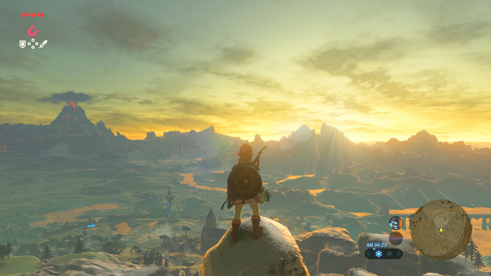

The Legend of Zelda: Breath of the Wild Master Trials DLC Review Posted on July 7, 2017

By: Josh
The breadth of content in The Legend of Zelda: Breath of the Wild is astounding. But with the arrival of the Master Trials DLC, a 100+ hour game can easily turn into much more. Between the challenging Trial of the Sword to the variety of masks on offer, the DLC is quite the treasure trove for the die-hard Zelda fan.
The Legend of Zelda: Breath of the Wild is already a massive game. With a gigantic version of Hyrule to explore and four Divine Beasts to tame, it’s hard to believe that anyone was complaining about the lack of content. However, the Master Trials DLC adds a host of new features making for a wonderfully enriched adventure. The Master Trials is the first part of the game’s Expansion Pass, with The Champion’s Ballad releasing later in 2017 which will add a new dungeon and an original story.
As one of Breath of the Wild’s most time consuming quests, collecting the Korok Seeds is arguably a mammoth task for any die-hard fan. Gathering all 900 of the game’s Korok Seeds, which the inhabitants of the Forest Haven have scattered all over the map, was quite the sore spot amongst fans. Though the original game provides few clues to their location, it didn’t quite take root, forcing players to dig deep into the overworld map. Thankfully, players can now grab the Korok mask in the Lost Woods for a helping hand. After locating the item and equipping it, Link will be given a hint when a Korok is nearby. While it isn’t more than a sound effect, it’s extremely useful when you’re tracking down some of the more well-hidden Koroks.
Alongside the Korok Mask, the Travel Medallion also serves a unique function within the game. After finding it in a strange area under one of the labyrinths, the Travel Medallion can be used to make a travel gate anywhere in Hyrule. This allows Link to instantly travel to wherever it was placed. And while the 120 Shrines serve the same function, it’s incredibly useful to be able to warp to anywhere in Hyrule. It’s slightly disappointing that you can only place one travel gate at a time, but it’s an extremely handy addition nonetheless.
The Master Trials also include a variety of classic Legend of Zelda items. Alongside Midna’s Helmet and Majora’s Mask, the DLC also adds a full set of armour based on both Tingle and the Phantoms. Unlike the Korok Mask though, Link will not gain any exclusive DLC abilities when wearing these nostalgic items. They’re a nice touch for any devoted fan, adding to the iconic Zelda feel that Breath of the Wild can sometimes lack.
All of these additional items are scattered across the game’s gigantic map. While a cryptic hint will point to a specific location, as Link is told to look “at the ruins where sinners were imprisoned”, it quickly becomes repetitive searching for the ten treasure chests. Plus, it doesn’t help that each bit of armour for the Phantom and Tingle are stored separately. It would have been rather anticlimactic just to give these items to the player, but the hunt can become extremely monotonous. Although it would have required much more work from the developers, it would have been interesting to tie a more creative side quest to each item. This is especially true for the Travel Medallion and the Korok Mask as these unique unlockables are relegated to generic treasure chests in the overworld.
One of the larger additions to the game is Master Mode. Unlike Skyward Sword or Twilight Princess HD, Breath of the Wild does not feature a Hero Mode to increase the game’s difficulty. The Master Trials DLC adds a replacement in the form of Master Mode. It primarily deals with the game’s enemies, as Link will now face Blue Bokoblins in areas normally inhabited by Red Bokoblins. It also allows enemies to regenerate health; an ability even the player doesn’t possess. However, the unchanged Divine Beasts and Shrines prevent this mode from reaching the heights of the original Legend of Zelda’s Second Quest. While it feels a bit shallow, Master Mode is a great challenge for only the strongest of adventurers.
The Trial of the Sword is the DLC’s real attraction though, with the Great Deku Tree challenging Link to defeat waves of increasingly difficult enemies. Twilight Princess and The Wind Waker feature similar challenges, but Breath of the Wild manages to put a unique spin on it. Similar to Stranded on Eventide, Link begins the Trial of the Sword without any of his armour or weaponry. This means that even simple Bokoblins and ChuChus can prove difficult, with Link forced to scavenge for basic weaponry to survive. While it’s let down slightly by Breath of the Wild’s horrendous enemy variety, the constantly changing environments certainly make up for this. The Trial of the Sword isn’t for all players, but it’s a fun challenge and presents a worthy reward to anyone who manages to complete it.
It’s extremely difficult to say whether the Expansion Pass is value for money. While the Master Trials DLC contains some great additional features, it’s a little light on content at present. If you’re on the fence about the Expansion Pass, it seems sensible to wait until we learn more about The Champion’s Ballad before you invest. However, the Master Trials is still a great package for anyone still venturing through Hyrule.
7/10
Disclaimer: The above reflects the score of the released Master Trials DLC only, it does not reflect the score for the full Expansion Pass.
'Super Mario Odyssey' Is About To Turn the Mario Series Upside-Down
Lurking beneath the kaleidoscopic bustle of Super Mario Odyssey, Nintendo's tentpole 3D Mario for its Switch game system, due October 27, is something counterintuitively pacific. The game in motion is vibrant and frenetic, angular and elastic, a potpourri of gameplay ideas whizzing and bopping like something unleashed from a crazed chemistry experiment.
New Nintendo 2DS XL Hardware Review
As the sixth system in the Nintendo 3DS and 2DS family of consoles, the New Nintendo 2DS XL is a solid offering for tech enthusiasts, collectors and children alike. With a design that’s pleasing to the eye and an exterior upper screen that’s satisfying to touch, the 2DS XL is only a budget device by the materials it uses rather than the hardware it contains.
Why 'Pokemon Go' Matters One Year Later
A year ago today, July 6, Niantic unleashed Pokémon Go, an unexpectedly fitness-aspirational scavenger hunt whose dazzling uptake no one saw coming. In hindsight, we should have guessed better. Pokémon is the third-bestselling games franchise in the world after Tetris and Mario, and that's restricting our count to the handheld turn-based roleplaying games at the franchise core.
The Legend of Zelda: Breath of the Wild Master Trials DLC Review
The breadth of content in The Legend of Zelda: Breath of the Wild is astounding. But with the arrival of the Master Trials DLC, a 100+ hour game can easily turn into much more. Between the challenging Trial of the Sword to the variety of masks on offer, the DLC is quite the treasure trove for the die-hard Zelda fan.